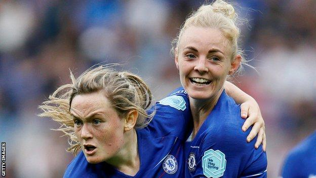

The tournament starts on 7 June in Paris, with home nations England and Scotland facing each other in their opening group game on Sunday, 9 June.
You can watch live coverage across BBC TV, radio and online.
Can Miedema free-score for the Dutch?
The Netherlands have never made it past the last 16 at the World Cup, but the Euro 2017 hosts and champions have in-form players making an impact on English soil.